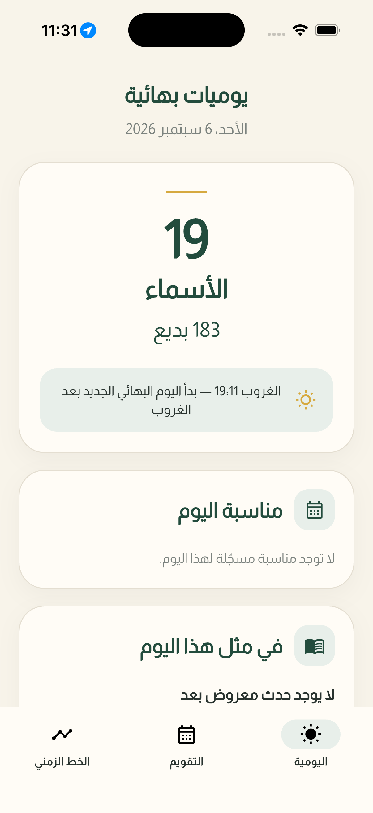
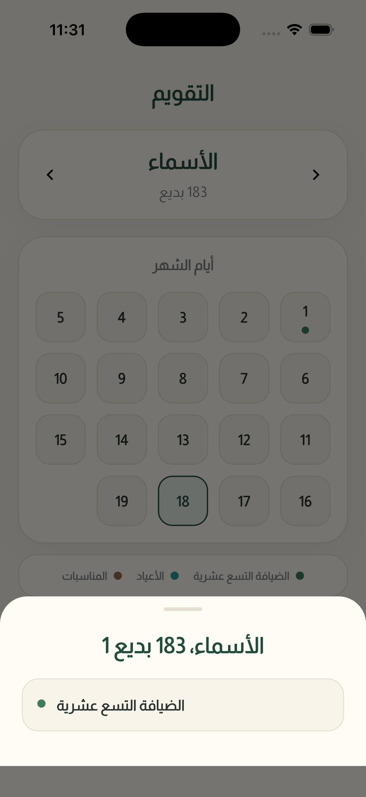
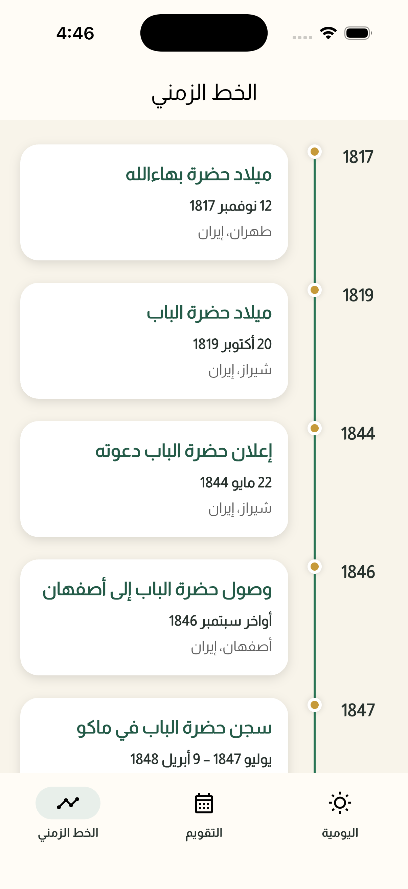
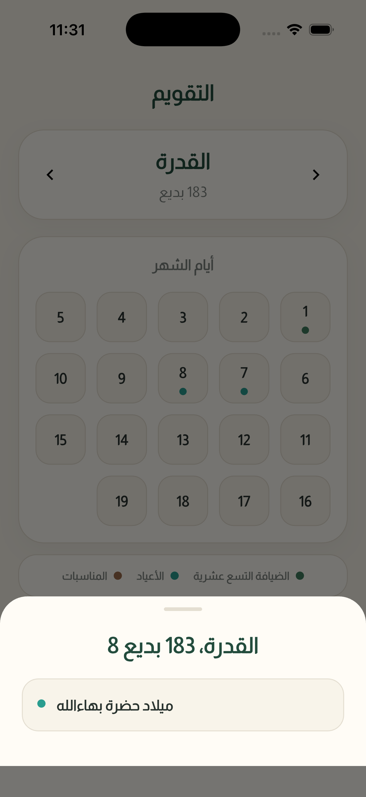
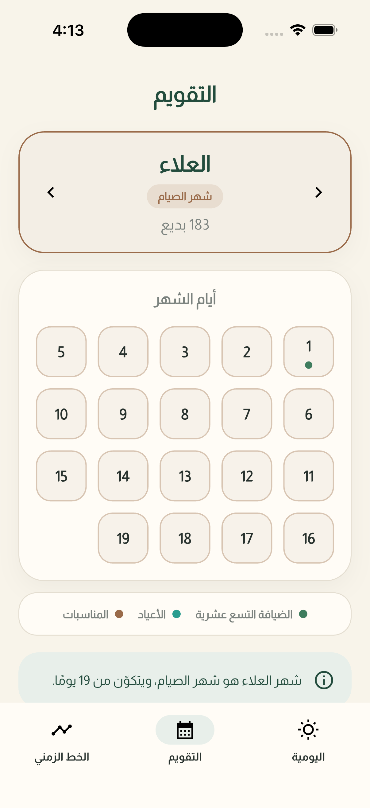
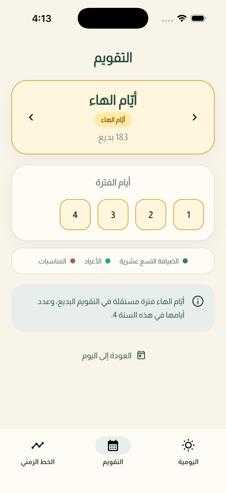

التقويم البهائي
عرض أشهر وأيام التقويم البديع بطريقة واضحة وسهلة القراءة.
تطبيق عربي للتقويم البهائي يساعد على متابعة التاريخ البديع، والمناسبات والأيام المباركة، والأحداث التاريخية الموثقة في واجهة عربية واضحة.
التطبيق قيد التطوير والاختبار.

تجربة عربية تجمع التاريخ البديع والمناسبات والأيام المباركة والأحداث التاريخية في مكان واحد.
عرض أشهر وأيام التقويم البديع بطريقة واضحة وسهلة القراءة.
مراعاة بداية اليوم البهائي عند الغروب وعرض وقت الغروب للمستخدم.
عرض الأعياد والمناسبات والضيافة التسع عشرية المرتبطة بالتقويم.
عرض أحداث تاريخية بهائية موثقة مرتبطة بتاريخ اليوم.
الصور أدناه مأخوذة مباشرة من تطبيق يوميات بهائية وتوضح الاستخدام الفعلي للتقويم والمناسبات.





يعرض التطبيق أحداثاً تاريخية بهائية مع الاحتفاظ بدرجة الدقة المتوفرة لكل تاريخ، سواء كان التاريخ دقيقاً أو تقريبياً أو على شكل فترة زمنية.
كما ترتبط الأحداث بالمصادر والمراجع المناسبة لدعم دقة المعلومات المعروضة في قسم «في مثل هذا اليوم».
يوميات بهائية قيد التطوير والاختبار حالياً، وسيتم الإعلان عن توفر التطبيق عند اكتمال مراحل الاختبار.
نحترم خصوصية المستخدم، وتوضح سياسة الخصوصية كيفية تعامل تطبيق يوميات بهائية مع المعلومات والبيانات المستخدمة في التطبيق.
قراءة سياسة الخصوصية